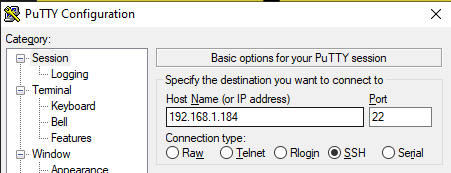
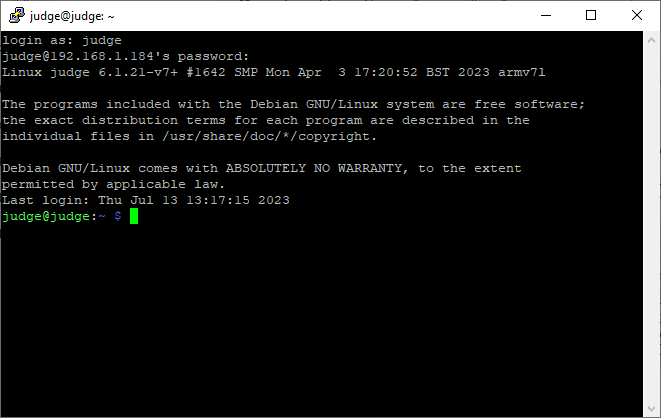
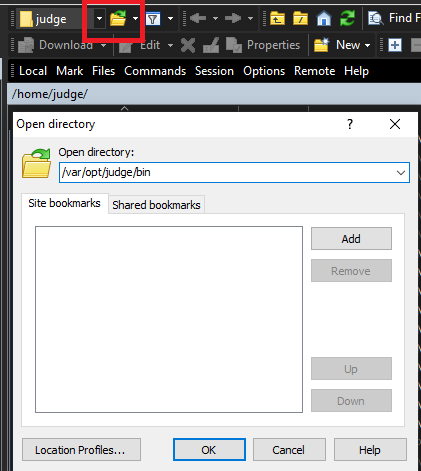
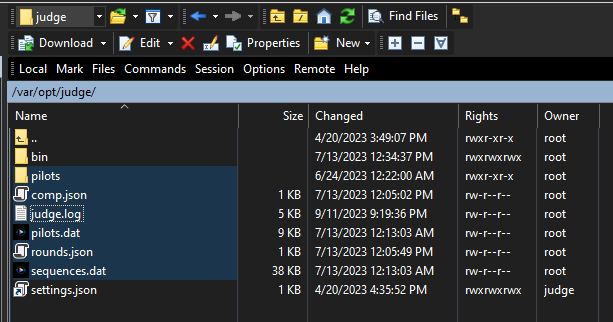
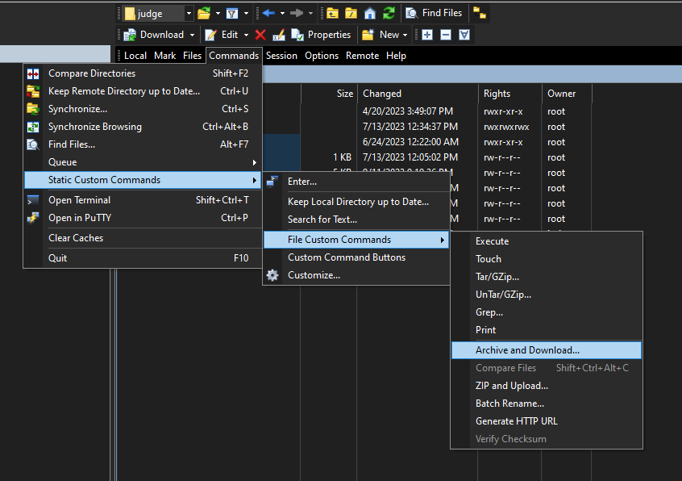
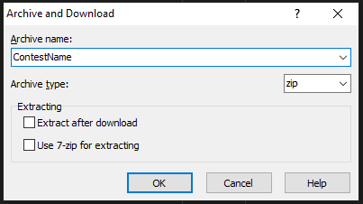
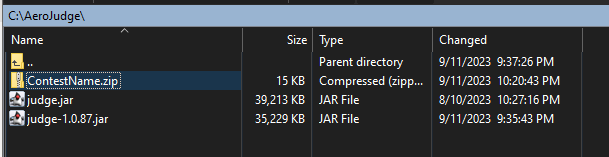

AeroJudge Advanced Topics
Logging into a device
These steps are needed for any of the advanced topics below. First download an SSH client Putty or SmarTTY
Login to the device using Putty entering the appropriate IP address 
Answer Yes if you receive a security alert (only the first time)

At login as prompt enter “judge” and press enter.
- At the password prompt enter the approprate password. Contact the IMAC AeroJudge development team for the current password.
Note
When typing the password no characters will be displayed on the screen. If a mistake is made, press Enter and it will prompt again to enter the correct password.

A command prompt will appear after entering the password:
Note
This is a Linux console and is very case sensitive (unlike Windows). Most all commands and parameters will be lowercase (unless otherwise noted). See [1]
Stopping/Starting the app
There are two processes running on the device to provide the functionality that makes up the AeroJudge application. Stopping both of these processes is necessary if you are upgrading the AeroJudge application.
- To stop the application display (web browser) which will display the desktop, enter the following command and press enter:
sudo systemctl stop kiosk.service
- To stop the application itself (what manages the scoring), enter the following command and press enter:
sudo systemctl stop kiosk.service
- To start the application itself (what manages the scoring), enter the following command and press enter:
sudo systemctl start kiosk.service
- To start the application display (web browser) which will display the desktop, enter the following command and press enter:
sudo systemctl start kiosk.service
Archiving old comp data
Use WinSCP (or similar FTP application) to connect to the device

Answer Yes if you receive a security alert (only the first time)

On the right-hand side, Click the open directory button (Control –> O) and type /var/opt/judge and click OK 
Select to highlight the files comp.json, judge.log, pilots.dat, rounds.json, sequences.dat and the pilots folder 
Right click and choose Static Custom Commands –> File Custom Commands –> Archive and Download… 
Enter a name for the archive (suggest to use contest name and date), select archive type (suggest zip), and click OK 
New archive file will then appear on the computer folder on the left 
(Optional) To clear out that data, use the Delete option on the right-hand side (with the 5 files and 1 folder selected)
Quick Linux command primer
sudo is similar to an Administrative command prompt - it runs any command that follows with admin rights
systemctl is a background process manager much like Windows Services. It allows the following common actions: start, stop, restart, status
cp is the copy file command
mv is the move file command
judge.service is the background application that shows the pilots, collects scores, and sends scores to Score application
kiosk.service is the web browser running in “kiosk” mode which removes all toolbars, address bars, etc. to minimize risk of users unfamiliar with the app from closing it or navigating away from the application address.